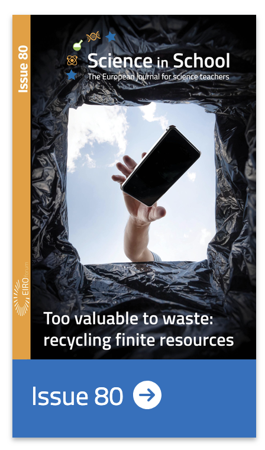

3. Large scale scientific infrastructures by dedicated organisations
EIROForum and access to advanced technologies
3.1 Background
Large organisations dedicated to the provision of advanced and large infrastructures to the broad scientific community in Europe can be national and international organisations.
National organisations represent capital investments of individual countries, e.g. DESY as a German Synchrotrone is funded by the German government to provide access to all interested german, but also other European reserchers.
International organisations are funded by groups of member states, and are thus intergovernmental organisations. These share the costs, and the states can send their scientists to use the facilities of all members. These organisations in Europe are organized in the The European Intergovernmental Research Organisation forum (EIROforum).
EIROForum is an alliance established in 2002 of Europe’s leading intergovernmental research organisations operating large-scale scientific infrastructures across disciplines including molecular biology, particle physics, astronomy, fusion, synchrotron science, and space research. EMBL is the only life sciences institute in the forum.
Members
- CERN - European Organization for Nuclear Research
- EMBL - European Molecular Biology Laboratory
- ESA - European Space Agency
- ESO - European Organisation for Astronomical Research in the Southern Hemisphere
- ESRF - European Synchrotron Radiation Facility
- ESS - European Spallation Source
- EUROfusion - European Consortium for the Development of Fusion Energy
- European XFEL - European X-ray Free-Electron Laser Facility
- ILL - Institut Laue-Langevin
Pooling the money of many countries gives the possibility to construct, purchase, develop and operate equipment more sophisticated than any single country could afford, and the different disciplines that use these infrastructures create room for interdisciplinary collaboration.
EIROforum was created to strengthen coordination between these organisations, reduce fragmentation in the European research landscape, and provide a common strategic voice in discussions with the European Commission and other international stakeholders. Collectively, its members represent some of Europe’s most advanced scientific facilities and support tens of thousands of researchers worldwide.
Membership in EIROForum is strictly regulated. Members must produce world-class science, be predominantly European, be well governed and share a strong commitment to science and society. A new member must also add value to EIROforum. Most applications are turned down; the latest new member joined a year or two before the course.
On behalf of the partnership, EIROforum maintains close links with the European Commission, the executive body of the European Union (EU). Underpinned by a Statement of Intent, signed by the Directors General of the partner organisations and the European Commissioner for Research and Innovation in 2010, the cooperation is practical in nature, focusing on exchange of information and joint actions in areas such as mobility and human resources, as well as public awareness of science and technology transfer.
3.2 What EIROforum does
EIROforum’s role includes:
Facilitating Scientific Discussions: Encourage and facilitate discussions among its members on issues of common interest, which are relevant to research and development.
Optimising Resources and Scientific Output: Maximise the scientific return and optimise the use of resources and facilities by sharing relevant developments and results, whenever feasible.
Forward-Looking Research and Infrastructure Development: Take an active part, in collaboration with other European scientific organisations, in a forward-look at promising and/or developing research directions and priorities, in particular in relation to new large-scale research infrastructures.
Coordination and External Relations: Simplify high-level interactions with the European Commission and other bodies of the European Union, and enable an effective response to specific requests for expert advice in the areas covered by the member organisations; provide co-ordinated representation to the outside world, including the general public, national governments and non-European countries.
Organizatiion of joint workshops with other EIROForum members and with the EC, and represent EIROForum on relevant conferences (e.g. https://icri2026.it/)
Outreach, Education, and Technology Transfer: Co-ordinate the outreach activities of the organisations, including technology transfer and public education.

Example 1: Joint outreach and education
The magazine of EIROforum members, Science in Schools, shares cutting-edge science with teachers at high-school and elementary level so that it can help shape school curricula.
All issues are available freely online: https://scienceinschool.org/issue
3.3 How EIROforum works
EIROforum operates on a rotational Presidency starting on 1 July each year. The chairing organisation coordinates and hosts the bi-annual Directors General Assembly (DGA), which brings together the EIROforum Council. The council is made up of the Directors General (or equivalent heads) of the member organisations, and constitutes as such the highest level of governance. The DGA is usually held at the chairing organisations headquarters in autumn, while the spring session is held in Brussels, to allow for meetings with the European Commission and other external guests.
Example 2: EIROforum governance
EMBL held the presidency until 30 June and passed it on the next day. On paper EMBL’s Director General is the president; in practice EMBL’s Ewan Birney represents EMBL at EIROforum, and EMBL’s head of international relations, Plamena Markov, takes part in the Coordination Group.
Under the Council sits the Coordination Group, which is composed of senior officials of the partner organisations. Under the responsibility of the Chair, the Coordination Group oversees the day-to-day activities, the work of the working groups and prepares the bi-annual DGAs.
Finally, EIROforum maintains a series of Working Groups (https://www.eiroforum.org/about-eiroforum/governance/).
Within their mandate, the Working Groups propose and implement activities of interest to the EIROforum members, often in cooperation with external partners. WGs bring together experts from different organisations to discuss shared challenges and exchange best practices. Some working groups are also tasked with actions, such as drafting policy papers, organising workshops or providing public training materials. The WGs meet according to their own needs, and report on their activities at the DGA.
The current EIROforum Working Groups are:
- Communications (ComG)
- Diversity and Inclusiveness
- Enterprise Risk Management (ERM)
- Environmental Sustainability
- Information Technology (IT)
- Innovation Management and Knowledge and Technology Transfer (IMKTT)
- Instrumentation
- International Affairs (IA)
- Library and Information Services
- Ombuds
- Procurement
- Safety
- Training and Career Development
WGs are created and retired in accordance with their relevance at a given time. As such, the list of WGs is subject to change.
Example 3: Activities of the working groups
The Ombuds working group is working on common guidelines for ombuds people
The Instrumentation working group organised a high-profile instrumentation school https://www.eiroforum.org/event/9th-eiroforum-school-on-instrumentation
3.4 Why should you care?
Access to major research infrastructures: EIROforum connects Europe’s leading large-scale scientific facilities, enabling researchers to access expertise and technologies beyond their own institution or discipline.
Cross-disciplinary collaboration: By bringing together organisations in life sciences, physics, astronomy, space science, and engineering, EIROforum helps bridge traditionally separate scientific communities.
Career mobility and professional networks: The EIROforum ecosystem includes thousands of scientists, engineers, and technical experts across Europe, creating opportunities for collaboration, training, mobility, and future career development.
Influence on European science policy: EIROforum shapes the broader environment in which scientists work by providing a collective voice for major research organisations in discussions on European research funding, infrastructure strategy, open science, and innovation.
Operational insight: the forum gives a window into how research infrastructures are managed, funded and integrated into the European and global ecosystem, and breaks down silos between institutes and disciplines.